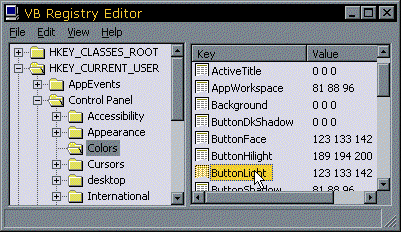

cRegistry Class (6K)
cRegistry Class (6K)
 VB5 Registry Editor Demonstration (59K)
VB5 Registry Editor Demonstration (59K)
 VB6 Registry Editor Demonstration (52K)
VB6 Registry Editor Demonstration (52K)
 Bugs: 0 / 1
Bugs: 0 / 1
 Issues: 1 / 2
Issues: 1 / 2
 Questions: 0 / 0
Questions: 0 / 0
 23 Jan 2004
23 Jan 2004
Added remote registry connection through the Machine. Many thanks to Yaron Lavi for providing the code.
Fixed problem with saving zero length strings. Thanks to Shane Marsden for providing the fix.
Fixed problem with truncation of binary data. Thanks to Morten Egelund Rasmussen (and many others!) for providing the fix.

Complete Registry control
The cRegistry class is an easy, self-contained way to get complete access to the Windows registry. Simple methods allow you to create, enumerate and delete keys and values in the registry, without restriction. You can even read/write binary data to the registry. To see how powerful this library is, download the demonstration Registry Editor, written entirely in VB. Its not far off RegEdit shipped with Windows (although note in my version not all the features are finished!)
Usage
Here is a brief summary of typical uses of the class:
To get a String Value from the Registry
Dim c As New cRegistry
With c
.ClassKey = HKEY_LOCAL_MACHINE
.SectionKey = "Software\MyApp\Tips"
.ValueKey = "Tip1"
.ValueType = REG_SZ
sTip = .Value
End With
To get a Numeric Value from the Registry
Dim c As New cRegistry
With c
.ClassKey = HKEY_LOCAL_MACHINE
.SectionKey = "Software\MyApp\Tips"
.ValueKey = "TipCount"
.ValueType = REG_DWORD
lTipCount = .Value
End With
To Save a Form's position to the Registry
Dim c As New cRegistry
With c
.ClassKey = HKEY_CURRENT_USER
' You don't need to check if this key already exists
' - the class will create it for you
.SectionKey = "Software\" & App.ExeName & "\" & frmThis.Name
.ValueKey = "Maximized"
.ValueType = REG_DWORD
.Value = (frmThis.WindowState = vbMaximized)
If (frmThis.WindowState <> vbMaximized)
.ValueKey = "Left"
.Value = frmThis.Left
.ValueKey = "Top"
.Value = frmThis.Top
.ValueKey = "Width"
.Value = frmThis.Width
.ValueKey = "Height"
.Value = frmThis.Height
End If
End With
To Get All The SubKeys of a Key
Note you can also get all the values for a key in a similar way, except you use EnumerateValues instead of EnumerateSections.
Dim c As New cRegistry
Dim sKeys() As String, iKeyCount As Long
With c
.ClassKey = HKEY_LOCAL_MACHINE
.SectionKey = "Software"
.EnumerateSections(sKeys(), iKeyCount)
For iKey = 1 To iKeyCount
Debug.Print sKeys(iKey)
Next iKey
End With
To Delete a Key
Dim c As New cRegistry
With c
.ClassKey = HKEY_LOCAL_MACHINE
.SectionKey = "Software\MyApp\Tips"
.DeleteKey
End With
To Delete a Value
Dim c As New cRegistry
With c
.ClassKey = HKEY_LOCAL_MACHINE
.SectionKey = "Software\MyApp\Tips"
.ValueKey = "Tip1"
.DeleteValue
End With
To Associate a File of type .CCD with your executable
Dim c As New cRegistry
With c
.CreateEXEAssociation _
App.Path & "\" & App.ExeName, _
"CCarDesign.Project", _
"Custom Car Designer Project", _
"CCD"
End With
To Read BINARY values from the registry
Binary values are returned as a variant of type byte array. This code demonstrates how to format the returned value into a string of hexadecimal values, similar to the display provided in RegEdit:
Dim cR As New cRegistry
Dim iByte As Long
Dim vR as Variant
With cR
.ClassKey = HKEY_CURRENT_USER
.SectionKey = "Control Panel\Appearance"
.ValueKey = "CustomColors"
vR = .Value
If .ValueType = REG_BINARY Then
' Read through the byte array and output it as a series of hex values:
For iByte = LBound(vR) To UBound(vR)
sOut = sOut & "&H"
If (iByte<&H10) Then
sOut = sOut & "0"
End If
sOut = sOut & Hex$(vR(iByte)) & " "
Next iByte
Else
sOut = vR
End If
Debug.Print sOut
End With
To Set BINARY values from the registry
Similarly, to store binary values in the registry, cRegistry.cls expects a byte array of the binary values you wish to store. This example (rather uselessly!) stores all the Red, Green, Blue values of each of VB's QBColors into a binary array:
Dim cR As New cRegistry
Dim i As Long
Dim lC As Long
Dim bR As Byte
Dim bG As Byte
Dim bB As Byte
Dim bOut() As Byte
' Create a binary array containing all the Red,Green,Blue values of the QBColors:
ReDim bOut(0 To 15 * 3 - 1) As Byte
For i = 1 To 15
' Get the Red, Green, Blue for the QBColor at index i:
lC = QBColor(i)
bR = (lC And &HFF&)
bG = ((lC And &HFF00&) \ &H100&)
bB = ((lC And &HFF0000) \ &H10000)
' Add Red, Green, Blue to the byte array to store:
bOut((i - 1) * 3) = bR
bOut((i - 1) * 3 + 1) = bG
bOut((i - 1) * 3 + 2) = bB
Next i
' Store it:
With cR
.ClassKey = HKEY_CURRENT_USER
.SectionKey = "software\vbaccelerator\cRegistry\Binary Test"
.ValueKey = "QBColors"
.ValueType = REG_BINARY
.Value = bOut()
End With
Daniel Henry has written an article which provides a wrapper around this class to make things even simpler. Have a look at cRegistry Wrapper.